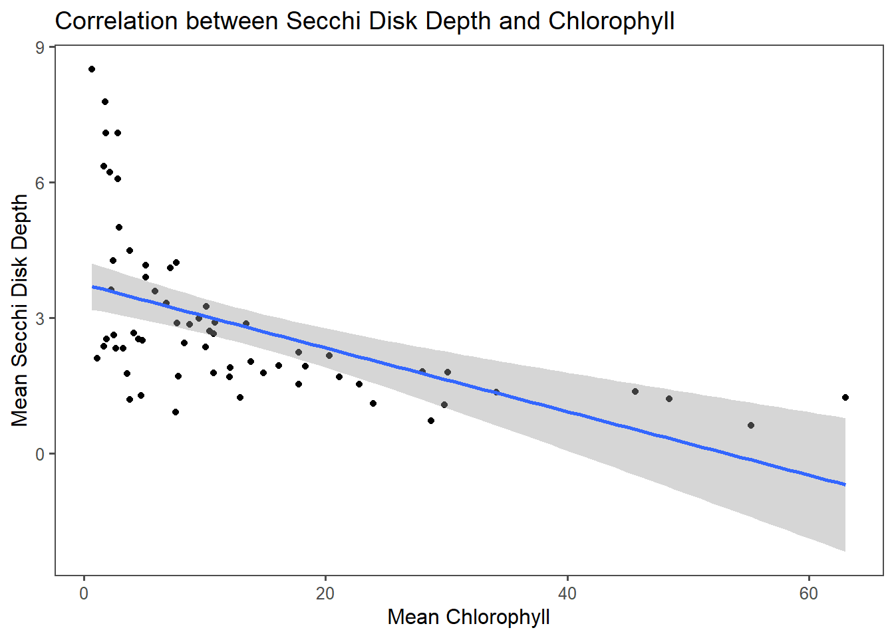

Chapter 16 Class work
16.1 1) What is the correlation between Secchi Disk Depth and Chlorophyll a for sites with at least 200 observations?
- Here, I just want a plot of chla vs secchi for all sites
ggplot(mean_values_200,aes(x = mean_chl, y = mean_secchi)) +
geom_point() +
geom_smooth(method='lm', formula= y~x) +
ggthemes::theme_few() +
labs(x = "Mean Chlorophyll", y = "Mean Secchi Disk Depth", title = "Correlation between Secchi Disk Depth and Chlorophyll")
cor(mean_values_200$mean_chl,mean_values_200$mean_secchi)## [1] -0.5320319For sites with over 200 observations, there is a slight negative correlation between secchi disk depth and chlorophyll content. The correlation value is -0.5320319 which is in agreement with the graph that shows a slight negative relationship between these values. As mean chlorophyll value increases, the mean secchi depth decreases.
16.2 Why might this be the case?
Secchi disk depth measures the clarity of the water. A greater secchi value indicates higher clarity of the water. Chlorophyll is a pigment found in plants, algae, and phytoplankton, so this measurement can approximate algae content in water. A higher chlorophyll content suggests reduced clarity. A high chlorophyll content would therefore correspond to lower secchi disk readings.
16.3 2) What states have the most data?
16.3.1 2a) First you will need to make a lagos spatial dataset that has the total number of counts per site.
spatial_lakes <-lake_centers %>%
group_by(lagoslakeid,nhd_long,nhd_lat) %>%
count() %>%
st_as_sf(.,coords=c('nhd_long','nhd_lat'),
crs=4326) 16.3.2 2b) Second, you will need to join this point dataset to the us_boundaries data.
spatial_statelakes<- st_join(spatial_lakes,us_states())16.3.3 2c) Then you will want to group by state and sum all the observations in that state and arrange that data from most to least total observations per state.
state_counts <- spatial_statelakes %>%
as.data.frame() %>% # (remove geospatial data)
select(-geometry) %>% #(removes geometry column)
group_by(name) %>%
summarize(statecount = sum(n)) %>%
arrange(desc(statecount))
state_counts[1,1]## # A tibble: 1 x 1
## name
## <chr>
## 1 MinnesotaThe state with the most data is Minnesota.
16.4 3 Is there a spatial pattern in Secchi disk depth for lakes with at least 200 observations?
secchi_200 <- clarity_only %>%
group_by(lagoslakeid) %>%
mutate(count = n()) %>%
filter(count > 200)
mean_secchi_200 <- secchi_200 %>%
group_by(lagoslakeid) %>%
summarize(mean_secchi=mean(secchi,na.rm=T)) %>%
filter(!is.na(mean_secchi)) %>%
mutate(log10_mean_secchi = log10(mean_secchi))
spatial_secchi_200 <- inner_join(spatial_lakes,mean_secchi_200 %>%
distinct(lagoslakeid,.keep_all=T),
by='lagoslakeid')
mapview(spatial_secchi_200, canvas = TRUE, zcol = 'mean_secchi', layer.name = 'Mean Secchi Depth')There does seem to be a spatial pattern to the secchi disk depth. The New England states have higher secchi disk depth readings. Farther west, in states like Minnesota and Missouri, the secchi disk depth readings decrease.